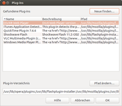

Plugins
Archivierte Anleitung
Dieser Artikel wurde archiviert, da er - oder Teile daraus - nur noch unter einer älteren Ubuntu-Version nutzbar ist. Diese Anleitung wird vom Wiki-Team weder auf Richtigkeit überprüft noch anderweitig gepflegt. Zusätzlich wurde der Artikel für weitere Änderungen gesperrt.
Zum Verständnis dieses Artikels sind folgende Seiten hilfreich:
In diesem Artikel wird beschrieben, wie man die häufigsten Multimedia-Erweiterungen für Archiv/Opera 12 installiert oder deren Installation kontrolliert bzw. anpasst.
Adobe Flash Plugin¶
Der Adobe Flashplayer für Linux ist direkt in den offiziellen Paketquellen enthalten. Die Installation ist im Artikel Adobe Flash beschrieben und sollte gegenüber der manuellen Installation bevorzugt werden. Falls der Plugin-Pfad von Opera das Firefox-Plugin-Verzeichnis /usr/lib/firefox/plugins beinhaltet, steht das Plugin Opera anschließend direkt zur Verfügung.
Manuell¶
Von dieser Seite  wird der Flashplayer heruntergeladen, dann wird das heruntergeladene Archiv entpackt [4] und die libflashplayer.so ins Plugin-Verzeichnis von Opera kopiert.
wird der Flashplayer heruntergeladen, dann wird das heruntergeladene Archiv entpackt [4] und die libflashplayer.so ins Plugin-Verzeichnis von Opera kopiert.
Hinweis!
Fremdsoftware kann das System gefährden.
Man öffnet ein Terminal [3] und gibt den folgenden Befehl ein:
sudo cp libflashplayer.so /usr/lib/opera/plugins
Nun sollte nach einem Neustart von Opera einem ungestörten Flash-Genuss nichts mehr im Wege stehen.
Hinweis:
Die Datei ~/opera/opera6.ini kann testweise gelöscht werden. Damit wird Opera auf die Standardwerte zurückgesetzt.
Mozilla MPlayer Plugin¶
Erst ab Opera 9.5 wird das MPlayer-Plugin unterstützt. Dieses ermöglicht es, auf Webseiten eingebettete Videos anzusehen, ohne einen Videoplayer zu starten. Dazu muss man zunächst die Pakete
installieren [1]. 
Nach einem Neustart von Opera gibt man in einem leeren Tab:
opera:plugins
ein. Nun werden alle aktiven Plugins aufgelistet. Zum Abschluss muss noch die Videoausgabe konfiguriert werden, denn wenn Compiz aktiviert ist, gibt es keine Videoausgabe. Man macht also einen  auf das eingebettete Video, wählt "Konfigurieren" und wählt im Reiter "Videoausgabe" "X11" aus. Nun sollten Videos korrekt wiedergegeben werden.
auf das eingebettete Video, wählt "Konfigurieren" und wählt im Reiter "Videoausgabe" "X11" aus. Nun sollten Videos korrekt wiedergegeben werden.
Java Plugin¶
Hinweis:
Opera ist für notorische und subtile Probleme mit Java bekannt. Es passiert häufiger, dass nur bestimmte Versionen korrekt funktionieren, manchmal auch nur in Kombination mit einer bestimmten Java-Version. Da Fehler (wenn überhaupt) nur in der Entwicklerversion repariert werden, sollte man nach Möglichkeit immer die gerade aktuelle Version von Opera nutzen.
Bis einschließlich Ubuntu 11.04 funktionierte das alternative OpenJDK bzw. das Browser-Plugin icedtea-plugin nicht mit Opera. Dieses Problem ist inzwischen gelöst.
Zuerst benötigt man eine Java-Laufzeitumgebung (JRE) und das dazugehörige Browser-Plugin. Ist Java korrekt installiert, muss man nun in Opera im Menüpunkt "Extras -> Einstellungen -> Erweitert -> Inhalte" bei "Plug-in-Optionen..." kontrollieren, welche Plugins über welche Pfadangaben gefunden wurden.
Bei älteren Opera-Versionen lautete dieser Punkt noch "Java aktivieren". Und unter "Java Optionen" musste ein Pfad wie z.B. /usr/lib/jvm/jre/lib/i386/ eingetragen werden. Anschließend konnte man sich die Korrektheit des Pfades mit Hilfe der Schaltfläche "Java-Pfad überprüfen" bestätigen lassen. Nun musste Opera neu gestartet werden.
Mit der Pseudo-Adresse opera:about und auf verschiedenen Webseiten kann man testen, ob die Java-Umgebung korrekt erkannt wird und unter Opera funktioniert.
Ab Opera 10.6¶
Ab Opera 10.6 kann Java auf dem eben beschriebenen Weg nicht mehr aktiviert werden – Java wird nicht mehr direkt gestartet, sondern nur noch als Plugin aufgerufen. Dazu sucht man zuerst auf dem Rechner die Datei libjava.so, beispielsweise mit locate. Der Ordner, in dem diese Datei enthalten ist, muss nun über "Einstellungen -> Erweitert -> Inhalte -> Plug-in-Optionen" hinzugefügt werden. Dies geschieht am einfachsten über die Schaltfläche "Pfad ändern... -> Hinzufügen". Nun kann man bequem zum ermittelten Ordner navigieren.
Die Überprüfung erfolgt im Gegensatz zu oben mit der Pseudo-Adresse opera:plugins oder den erwähnten Webseiten.

64 Bit¶
Auch auf 64-Bit-Systemen kann man die 32-Bit-Version von Java installieren und in Opera den Java-Pfad zur libjava.so entsprechend setzen.
KParts Plugin¶
Das KParts Plugin  (nur für KDE) ermöglicht die Darstellung von PDF-, Office- und anderer Dateitypen direkt in Opera (sowie Firefox und Chromium) mit Hilfe der KParts-Technologie. Für die Unterstützung aller Officedateien (doc, docx, ppt, xls, odt, ...) muss Calligra (KOffice) installiert sein. Dieses Plugin kann unter Ubuntu 12.04 über folgendes "Personal Package Archiv" (PPA) installiert [1] werden:
(nur für KDE) ermöglicht die Darstellung von PDF-, Office- und anderer Dateitypen direkt in Opera (sowie Firefox und Chromium) mit Hilfe der KParts-Technologie. Für die Unterstützung aller Officedateien (doc, docx, ppt, xls, odt, ...) muss Calligra (KOffice) installiert sein. Dieses Plugin kann unter Ubuntu 12.04 über folgendes "Personal Package Archiv" (PPA) installiert [1] werden:
Adresszeile zum Hinzufügen des PPAs:
ppa:poomerang/extra
Hinweis!
Zusätzliche Fremdquellen können das System gefährden.
Ein PPA unterstützt nicht zwangsläufig alle Ubuntu-Versionen. Weitere Informationen sind der  PPA-Beschreibung des Eigentümers/Teams poomerang zu entnehmen.
PPA-Beschreibung des Eigentümers/Teams poomerang zu entnehmen.
Damit Pakete aus dem PPA genutzt werden können, müssen die Paketquellen neu eingelesen werden.
Falls der Archiv/Adobe Reader installiert ist, aber das KParts Plugin als PDF-Reader im Opera (und den anderen unterstützten Browsern) genutzt werden soll, muss im Ordner /usr/lib/mozilla/plugins die Verknüpfung npwrapper.nppdf.so entfernt werden. Nach jedem Update des Adobe Readers muss dieser Vorgang wiederholt werden.
- Erstellt mit Inyoka
-
 2004 – 2017 ubuntuusers.de • Einige Rechte vorbehalten
2004 – 2017 ubuntuusers.de • Einige Rechte vorbehalten
Lizenz • Kontakt • Datenschutz • Impressum • Serverstatus -
Serverhousing gespendet von